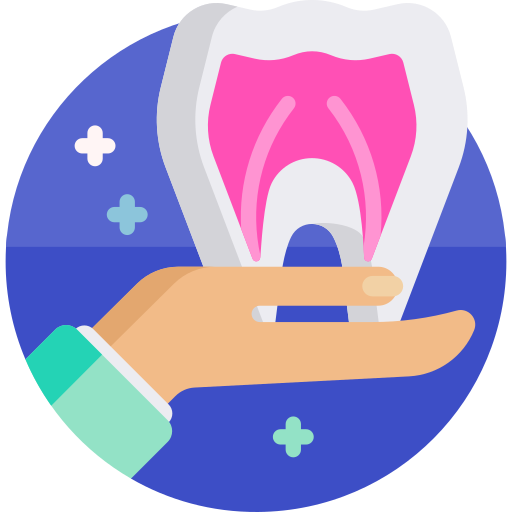
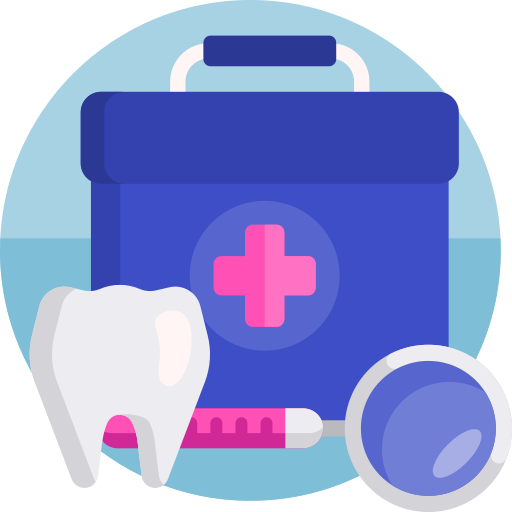
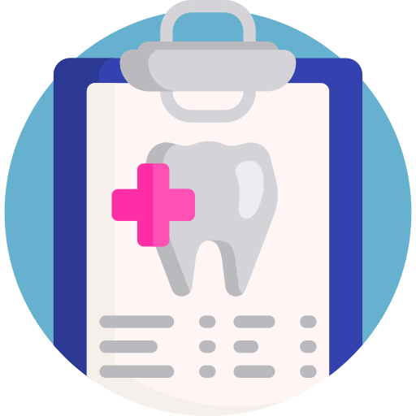

<ion-content>
  <ion-slides  id="slides" pager="true" #theSlides [options]="slideOpts">
    <ion-list>
      <ion-item *ngFor="let n of scheduled">
        <ion-label text-wrap>{{ n.id }} - {{n.title}}
          <p>Trigger: {{ n.trigger | json }}</p>
        </ion-label>
      </ion-item>
    </ion-list>
    <ion-slide>
   <div class="container-page">
    
    <p  style=" color:#ffffff; font-size: 20px;
    font-weight: bold;font-family: Arial, Helvetica, sans-serif;">
      <strong> Seja Bem Vindo ao </strong><br>Ori!</p>
      <ion-button (click)="next(theSlides)">Avançar</ion-button>
   </div>
    </ion-slide>
    <ion-slide>
     <div class="container-page">
       
      <p  style="color:#ffffff; font-size: 20px;
      font-weight: bold;font-family: Arial, Helvetica, sans-serif;"><strong>
        A dor na face e dos lados da cabeça pode estar relacionada a alguns hábitos que sobrecarregam os dentes,
      </strong><br> ligamentos e músculos da face, da cabeça e do pescoço!</p>
      <ion-button (click)="next(theSlides)">Avançar</ion-button>
     </div>
    </ion-slide>
    <ion-slide>
      <div class="container-page">
        
        <p  style="color:#ffffff; font-size: 20px;
        font-weight: bold; margin-bottom: 47px; font-family:  Arial, Helvetica, sans-serif;"><strong>Estes hábitos são chamados de PARAFUNCIONAIS e estão relacionados</strong><br> a vários fatores, dentre eles a ansiedade e o estresse durante o dia.<br>
        <ion-button (click)="setupPush()">Confirma</ion-button>
      </p>
      </div>
    </ion-slide>

    </ion-slides>
</ion-content>
 


